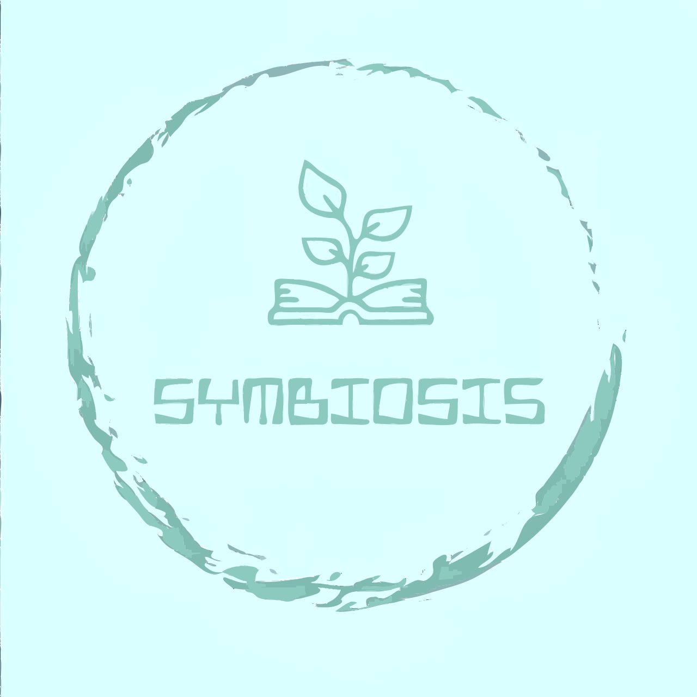

Главная
Темы
Практикум
Контакты
Тест по теме "Определение жизни. Основные свойства живых организмов"
Какие изменения происходят в живых организмах при обмене веществ?
При обмене веществ в живых организмах происходят химические реакции, в результате которых органические вещества (например, углеводы, жиры и белки) разлагаются на более простые молекулы, а затем используются для получения энергии.
Обмен веществ включает в себя процессы синтеза (анаболизм) и разрушения (катаболизм) молекул, которые необходимы для роста, развития и поддержания жизнедеятельности организма.
В результате обмена веществ в живых организмах образуются отходы, которые выделяются через почки, кишечник и легкие.
Обмен веществ связан с потреблением и выделением воды, электролитов и других веществ через потовые железы, кожу и дыхательную систему.
Как вы понимаете понятие наследственность?
Наследственность — это передача генетической информации от родителей к потомству, что определяет наследственные свойства и характеристики организма.
Наследственность — это механизм, который позволяет передавать гены (наследственные материалы) от одного поколения к другому, обеспечивая сходство и различия между родственниками.
Наследственность — это процесс, в результате которого генетическая информация, закодированная в ДНК, преобразуется в различные фенотипические проявления, такие как цвет глаз, форма лица или рост организма.
Завершить тест